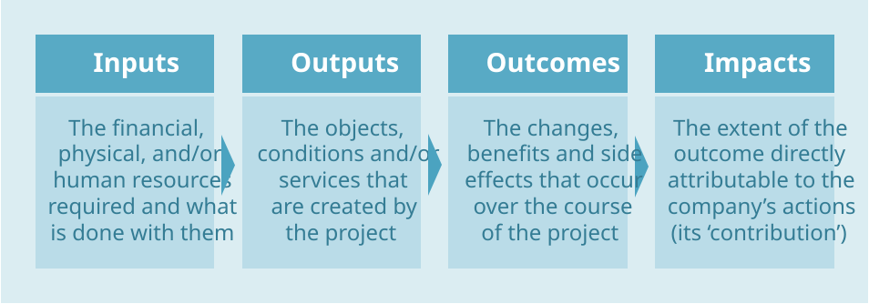

4. Assessment
This section describes the key concepts and considerations that can help a company to measure (and thus credibly articulate) the results of its Positive Pursuits.
As described previously, a company can undertake Positive Pursuits in many ways, but activities can typically be thought of in terms of projects or products. The guidance in this section is relevant for both, but for simplicity the term projects will be used.
4.1 Creating or contributing to positive impact
The path towards positive impact often starts with intentionality, whereby a company has a clear purpose to achieve certain outcomes, and is able to state exactly how it will do so. But sometimes a company’s activities may lead to positive outcomes by chance.
In either case, if a company wishes to understand and explain the extent of the results it achieves, it should be able to articulate why it believes there is a link between action and outcome. This articulation is sometimes referred to as a theory of change (see box below).
Theory of change
A theory of change is a description of how and why a specific outcome is expected to happen in a particular context. [188] This description can include links between the issue(s) tackled, the inputs used (invested capital, time etc.), the activities performed, the outputs produced and the benefits that accrue (and to whom) as a result.
For a company to credibly articulate why it is creating or contributing to an outcome, it should have a good understanding of its theory of change.
When possible, progress should be tracked from the moment a project starts. In doing so, it is important to distinguish between several levels of assessment, in increasing order of significance: input, output, outcome and impact (see Figure 11).
Inputs and outputs are the most straightforward, because this kind of information is often captured by traditional financial reporting or resource management systems. Outputs are typically not the ultimate goal of the project itself, but rather are the mechanism through which outcomes are realized.
The next level involves assessing realized outcomes: measurable changes that occur for target stakeholders. Realized outcomes can be positive or negative, and intended or unintended. In comparison to outputs, assessing outcomes typically requires gathering and analyzing data which the company may not routinely track. Quantifying outcomes is always preferable, but sometimes a project’s outcomes may take years to materialize, or their measurement may be impractical. In such cases a company might choose to focus its assessment and reporting on outputs only.
A company may assume that without its project, things would continue to stay the same as before it started. In reality the world is constantly changing. Factors such as weather events, economic and cultural trends, availability of technology, and demographic shifts can all lead to significant changes in outcomes that are not due to the company’s intervention. To the degree that resources and practicality allow, a company should therefore seek to assess its contribution to any realized outcome, in order to facilitate a true understanding of the impact of its actions.
The next section describes how to assess and report on Positive Pursuits at each level.
Figure 11: Levels of assessment for Positive Pursuits.

4.2 Assessing and reporting on Positive Pursuits
There are a potentially infinite number of ways in which a company can undertake a Positive Pursuit. For example, ensuring More people are healthy and safe from harm by reducing the impact of diabetes among the world’s poorest people might be tackled by educating people on healthy eating choices, providing access to affordable insulin, or training healthcare professionals to spot and treat the disease before symptoms escalate.
This diversity of approach means it can be challenging to assess and report on any two projects in a consistent and comparable way. But striving to do so is important, both to inform future project decisions, and to present results to investors and others in a meaningful way. The need for a common way to describe impact led to the formation of the Impact Management Project (IMP), which the following guidance draws on (see callout box below).
Ways to characterize and assess a project’s results
A company should choose which of the four levels of assessment (or a combination thereof) to focus on for any given project, depending on its characteristics and progress.
With any project, the ultimate aim should be to assess results in terms of its impacts, but if this is either not possible or practical, a company should state the reason(s) for its chosen assessment approach.
Introducing the Impact Management Project (IMP)
Between 2016 and 2018, the IMP brought together over 2,000 practitioners from across geographies and disciplines, to arrive at a consensus on how to talk about, manage and measure impact – bridging the perspectives of business, non-profits, investment, social science, grant-making, evaluation, policy, standards bodies and accounting. This diverse group arrived at a shared definition of “impact”, and agreed on the types of data one would expect to find in any good impact framework or report.255 [18]
Figure 12 identifies five key concepts – stakeholder, scale, depth, duration and significance – which together characterize the extent of a project’s results, whether intended or realized. These five concepts underpin the metrics and narrative used for each assessment level.
Figure 12: Key concepts for assessment: stakeholder, scale, depth, duration and significance.
| Key concepts for assessing Positive Pursuits | |||
|---|---|---|---|
| Concepts | Description | Categorization | Measurement |
| Stakeholder | The people experiencing the outcome or, if relevant, the environment affected by the change | N/A | N/A |
| Scale | The number of people experiencing the outcome or, if relevant, the area of environment affected by the change | N/A | Determine number of individuals, communities or area of land affected |
| Depth | The degree of social or environmental change experienced by the stakeholder (e.g. increase in literacy rates) | N/A | Determine difference between level of outcome currently experienced and baseline (conditions before the project began) |
| Duration | Time period for which the stakeholder experiences the outcome (e.g. number of months) |
|
Duration and significance can be measured by:
|
| Significance | Importance of the outcome from the perspective of the affected stakeholder |
|
|
Assessing and reporting on project inputs
If a project is in its early stages, the inputs that a company has provided to support or develop it may be the only thing that can be tracked. In such cases, progress should be assessed and reported as outlined in Figure 13.
Figure 13: How to assess project inputs.
| Project Inputs | |
|---|---|
| Progress indicators | Context data |
| Input: The amount of financial or other types of resource provided for the project | Positive Pursuit: The type(s) of outcome the project intends to deliver |
Project summary: A short description of the project, explaining how it is expected to contribute to the Positive Pursuit. This should include:
|
|
| Intended scale: The number of people or area of environment likely to be affected by the project | |
| Intended depth: The intended degree of social or environmental change the stakeholder may experience | |
| Intended duration category: temporary, fixed period or permanent | |
| Intended significance category: meeting minor need, significant need or major need | |
| Possible trade-offs: Negative outcomes that might result from the project | |
Evidence: Quantitative and/or qualitative evidence, together with details of the measurement methods used for:
|
|
Assessing and reporting on project outputs
Once a project is up and running, a company should be able to track interim results – regarding its outputs – as they start to accumulate. Progress should be assessed and reported as outlined in Figure 14.
Figure 14: How to assess project outputs.
| Project Outputs | |
|---|---|
| Progress indicators | Context data |
| Output: The number or scale of objects, conditions or services that are formed from the input | Positive Pursuit: The type(s) of outcome the project intends to deliver |
Project summary: A short description of the project, explaining how it is expected to contribute to the Positive Pursuit. This should include:
|
|
| Intended scale: The number of people or area of environment likely to be affected by the project | |
| Intended depth: The intended degree of social or environmental change the stakeholder may experience | |
| Intended duration category: temporary, fixed period or permanent | |
| Intended significance category: meeting minor need, significant need or major need | |
| Possible trade-offs: Negative outcomes that might result from the project | |
Evidence: Quantitative and/or qualitative evidence, together with details of the measurement methods used for:
|
|
Assessing and reporting on project outcomes
At a high level, a project’s outcomes may be described in terms of the Positive Pursuit(s) to which they relate – but specific detail should be provided where possible. For example, the outcome of a project which ensures that More people are healthy and safe from harm may be quantified in terms of an increase in quality-adjusted-life-years (QALYs).
Progress should be assessed and reported as outlined in Figure 15. For more guidance on how to calculate depth and duration see this frequently asked question. Where a suitable outcome indicator can’t be identified, an output indicator might be used as a proxy.256
Figure 15: How to assess project outcomes.
| Project Outcomes | |
|---|---|
| Progress indicators | Context data |
|
Scale: The number of people or area of environment affected by the project |
Positive Pursuit: The type(s) of outcome the project intends to deliver |
|
Depth: The degree of social or environmental change the stakeholder experienced |
Project summary: A short description of the project, explaining how it is expected to contribute to the Positive Pursuit. This should include:
|
|
Duration: The length of time for which the stakeholder experienced the outcome |
|
|
Duration category: One-off, fixed period or permanent |
|
|
Significance: The confirmed importance of the outcome to the stakeholder |
Evidence: Quantitative and/or qualitative evidence, together with details of the measurement methods used for:
|
|
Significance category: Meeting minor, significant or major need |
|
| Trade-offs: The depth, duration and significance of any negative outcomes resulting from the project | |
Assessing and reporting on project impacts
Establishing the extent to which an outcome is attributable to a specific project can be difficult. The most reliable way to do so is to establish a ‘counterfactual’ – that is, what would have happened in the absence of the company’s intervention. The IMP provides more useful guidance on this topic: see this frequently asked question for details.
Once a suitable counterfactual is established, progress should be assessed and reported as outlined in Figure 16. For more information on how to calculate a company’s contribution to depth and duration, see this frequently asked question.
Figure 16: How to assess project impacts.
| Project Impacts | |
|---|---|
| Progress indicators | Context data |
|
Scale: The number of people or area of environment affected by the project |
Positive Pursuit: The type(s) of outcome the project intends to deliver |
|
Depth contribution: The degree of social or environmental change the stakeholder experienced which is directly attributable to the project |
Project summary: A short description of the project, explaining how it is expected to contribute to the Positive Pursuit. This should include:
|
|
Duration contribution: The length of time for which the stakeholder experienced the outcome which is directly attributable to the project |
|
|
Duration category: One-off, fixed period or permanent |
|
|
Significance: The confirmed importance of the outcome to the stakeholder |
Evidence: Quantitative and/or qualitative evidence, together with details of the measurement methods used for:
|
|
Significance category: Meeting minor, significant or major need |
|
| Trade-offs: The depth, duration and significance of any negative outcomes resulting from the project | |
Assessing its Positive Pursuits enables a company to evaluate the effectiveness of its activities and to communicate its achievements to key stakeholders. For more information on how to report the results of Positive Pursuits see How to use this guide.
4.3 Example
ACME Inc. manufactures and sells all-natural lemonade products. It grows some of the ingredients it uses itself, and sources others from smallholder farmers in the vicinity of its production plant. Both ACME and the smallholder farmers depend on a nearby water source, which has been suffering from water stress over an extended period of time.
A report by an NGO operating in the country has identified the region as economically vulnerable to climate change, being heavily reliant on agriculture and suffering from water scarcity. Over the next decade, the NGO projects that the greatest local impact of climate change will be a 15% decrease in crop yields.
Project
Theory of change
ACME decides to run free classes for local smallholder farmers to help them increase their yields and reduce their water use, by teaching best-practice farming techniques which the company itself already employs. ACME describes the intended outcomes of this program as twofold: Others contribute less to water stress and People’s capabilities are strengthened.
ACME’s expectation is that the farmers’ new knowledge will improve yields for years to come, while reducing their water dependence.
The course is offered to farmers within a few dozen miles of ACME’s facilities.
Project description
Each course participant is helped to complete an enrolment survey, and ACME counts the completed forms to determine the number of participants in the program. Over the course of the training period, ACME monitors attendance by all farmers who have signed up, and once training is completed, they are verbally tested on what they have learned.
ACME visits each farmer 6 months after the initial training, to determine how well they are putting into practice the techniques taught. The company also allocates resources to check in annually with the farmers for the next 3 years, to monitor whether the new techniques continue to be used, to provide refresher training, and to measure whether the expected increase in crop yields has occurred.
Project assessment after 3 years
After three years, ACME assesses the impact of the project. While the farmers report that their water use has not increased, evidence for how much has been saved is anecdotal at best, given the lack of formal tracking over the period. ACME therefore cannot determine whether the project ensured that Others contribute less to water stress.
Instead it focuses its assessment on how its efforts were able to ensure People’s capabilities are strengthened.
Scale
A total of 60 farmers signed up for and took the training. After 6 months, 40 out of the original 60 farmers were found to be actively applying what they learned.
Depth
Over the course of the 3 years, the yields of all 40 farmers applying the new techniques improved by an average of 30% per year (compared to a control group of similar farmers who did not receive the training, operating in the same region).
When enrolling for the course, farmers were surveyed about their existing farming practices, any training they had received in the past 5 years, and why they had chosen to enroll in the course. The results revealed that the farmers would not, without the company’s intervention, be likely to learn how to apply the new farming techniques.
ACME therefore concludes that the yield improvement is primarily attributable to their education program.
Duration
ACME’s expectation was that the farmers’ new knowledge would improve yields for years to come, and this is what the evidence suggested: the increase in yield (compared to the control group) occurred the season following the education program, and remained consistent thereafter. ACME therefore concludes that the duration can be classified as permanent.
Significance
To gauge the significance of the project, ACME initially conducted its own research. By assessing the cost of living in the area, and comparing that to the income earned from crop sales by a sample of local farmers, ACME found that the expected decrease in crop yield due to climate change would be likely to cause a number of farmers to struggle to cover the cost of their families’ basic needs.
As such, ACME characterized the significance of the project as meeting a significant need.
ACME also followed up with ten of the farmers, asking them to what extent the project impacted their lives. The feedback was consistent: farmers felt confident in applying the new techniques and the increase in income following from the improved yields had strengthened their resilience to extreme weather events.
Reporting its contributions
Once the assessment was complete, ACME was able to report the following:
- Positive Pursuit: People’s capabilities are strengthened.
- Project Summary: Education program for smallholder farmers to raise crop yields, with a view to countering a projected decline in yields brought on by climate change. The company’s contribution to inputs is 100% (covering all financial costs and donating employee time to run the training program and monitor results).
- Scale: 40 participants completed the program.
- Evidence: Attendance records from the training sessions.
- Depth contribution: 30% average annual increase in crop yield compared to control group.
- Evidence: Measurements of the trained group’s crop yields, compared to a survey of average yields for non-trained farmers in the region.
- Duration contribution: The project resulted in a permanent benefit to the farmers.
- Duration category: Permanent.
- Evidence: Measurably improved yields after three years, which are expected to continue indefinitely.
- Significance: The program had a significant positive influence on farmer wellbeing.
- Significance category: Significant.
- Evidence: Farmer feedback plus an NGO statement on the economic vulnerability of farming communities in the area concerned.
- Trade-offs : No negative outcomes were identified.
When the results of the assessment are compiled, ACME is confident enough in the success of the project to engage the country’s government and a national NGO which supports farmers nationwide. A new program is devised, whereby the company and government co-fund the education of the NGO’s operatives, to equip them to deliver similar training programs to vulnerable farmers across the country.
Bibliography
Future-Fit Foundation is a contributing author to the initiative and, wherever possible, will endeavour to align its guidance with that of the IMP as it continues to evolve.↩︎
When a variable is impractical to measure (e.g. due to cost constraints), companies are encouraged to use a proxy variable instead. This is a variable assumed to be closely correlated with the immeasurable variable. For example, to gauge the effect of a crime reduction project, an organization might use change in number of assault victims admitted to hospital rooms as a proxy for percentage drop in violent crimes.↩︎